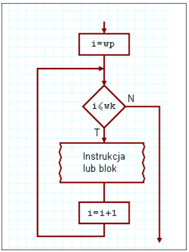
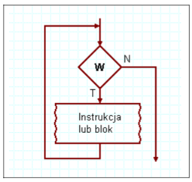
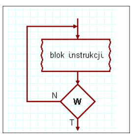

- Pętla For
- Konstrukcja
- Opis
Pętla wykonuje kod określoną liczbe razy
- Schemat blokowy

- Pętla While
- Konstrukcja
- Opis
Pętla while najpierw sprawdza warunek, potem coś wykonuje, pętla może się nie wykonać
- Schemat blokowy

- Pętla Do While
- Konstrukcja
- Opis
Pętla do...while zawsze wykona jedną iterację, zanim sprawdzi warunek. Zawsze więc wykona jakieś zadanie
- Schemat blokowy
